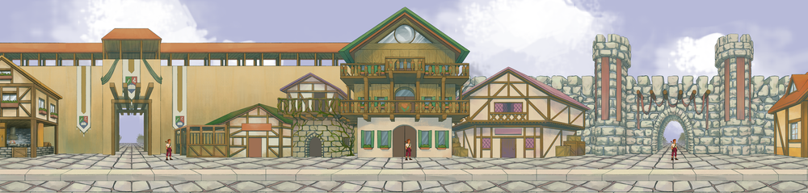
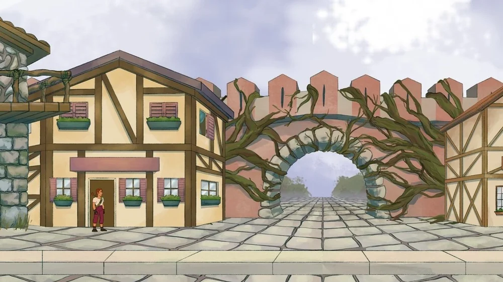
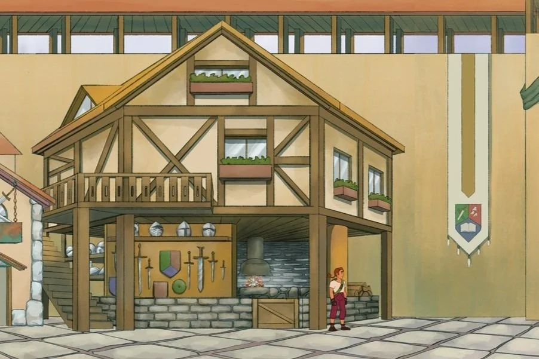
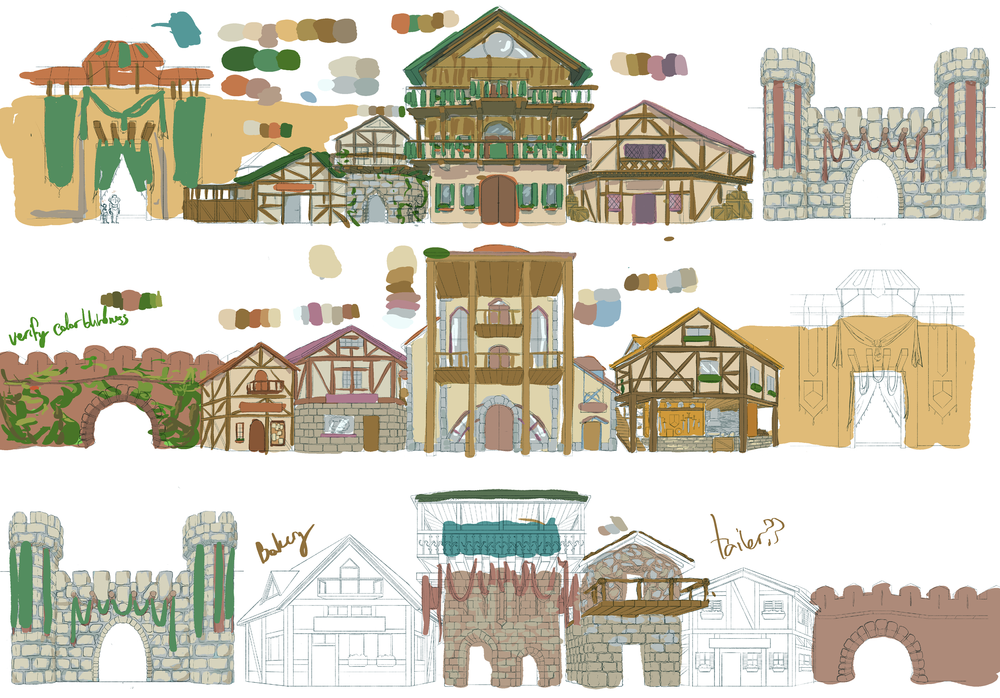

Inspired by the completion of their Roshamberg card game, Alexis and Zara decided to continue the Roshamberg universe in a 2D sidescroller video game. The center of the video game is the town of Roshamberg, and many characters from the card game live and make appearances here. The design and format of the town center is a heavy feat Alexis took upon themself. They wanted it to mimic a town square, but it needed to be navigable on a two dimensional plane. Alexis settled on a circular, looping design, with multiple exits for the different plot branches in the game. There are three exits, alternating with three points of interest, and between them are various stores. Once Zara and Alexis decided which stores would be necessary for plot and aesthetic reasons, it was time to design each building. A major design hurdle was perspective. How to create depth in a relatively flat medium? Alexis settled on alternating one and two point perspective. The gates and points of interests would have one point perspective— emphasizing their importance and imposingness— while the buildings between them would bridge the gap, sharing the perspective points between them, and adding depth and realism to the world. Admittedly, there are some awkward points; square buildings look pentagonal, or two buildings next to each other have different vanishing points. But the overall appearance isn’t obtrusive, and the scale the player experiences should obscure the illusion.